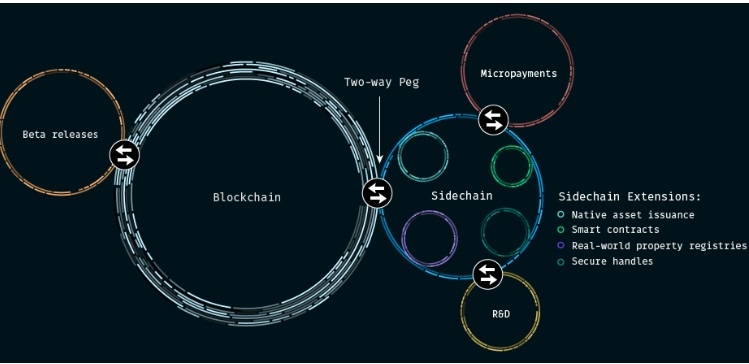

Sidechains are networks based on the bitcoin (block chain) protocol
that are isolated from the block chain, allowing activity
to exist in isolation until confirmation on the block chain,
at which point transferability becomes bidirectional.
Put simply, sidechaining is any mechanism that allows tokens from one blockchain to be
securely used within a completely separate blockchain but still moved back to the
original chain if necessary. By convention the original chain is normally referred
to as the main chain, while any additional blockchains which allow users to
transact within them in the tokens of the main chain are referred to as sidechains.
